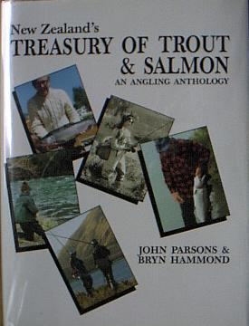

本棚から
New Zealand's TREASURY OF TROUT & SALMON
John Parsons & Bryn Hammond 編 The Halcyon Press. 刊
いろいろとニュージーランドの鱒釣りに関して調べるために、オークランドの市立図書館に行ったところ、かなり読み込まれて古くなったこの一冊に出会いました。

直訳すれば、「ニュージーランドの法典、トラウトとサーモン」とでもなりましょうか。古くは1800年代後半から現代（1989年）に至るまで、ニュージーランドの鱒と鮭に関しての歴史的資料、政府の刊行物、個人の手紙、単行本の一節、雑誌や新聞の記事、博物館にある資料・展示物の写真まで、ありとあらゆる話題を集めたアンソロジーです。
このテーマを追い求めていた私にとっては、まさに「宝物」の一冊です。図書館からの帰り、すぐさま Jason Books に立ち寄って探したところ、極上の程度の一冊があり、速攻で買いました。価格は50NZ$とやや高かったのですが、発行がやや古かったのでこれを逃せば入手不可能かと思い、例によって「清水寺バンジージャンプ」の心境でお金を払いました。
これだけの資料を集めた編者たち、パーソンズ氏とハモンド氏の努力にも敬服しますが、それだけの資料が現存することにも驚かされます。
両氏は他にも多数の釣り関連の本を出版しており、いくつかは今でも入手可能ですので、旅行の際に空港の売店でも入手可能かと思います。以下にお二方の略歴と著書を、本書のカバーから引用して紹介します。
Johon Parson's 氏
パーソンズ氏の最初の釣りに関する記事は、彼が17歳の時に、イギリスの Fishing Gazette 紙に掲載されています。以来彼は、釣りの楽しみや周辺の話題について多くの記事・本を書いています。26歳まではイギリス、46歳まではウェリントン周辺で暮らし現在はタウポに住んでいます。
情熱的な釣り人、愛書家、図書館の司書、ジャーナリスト、アドバタイジング・マネージャー、パブリックリレーションズ・コンサルタントと幅広い分野で活躍してきた彼は、現在は写真撮影と執筆活動を中心にしており、そしてもちろん時間の許す限り鱒釣りを楽しんでいます。
A Fisherman's Year
Parson's Glory
A Taupo Season
Deceiving Trout
Bryn Hammond 氏
イギリス生まれのハモンド氏は1981年からタウポに住んでいます。40年に及ぶ航海生活を通じてニュージーランドと深く関わってきた彼は、偶然パーソンズ氏の家のそばに居を構えたことからこのアンソロジーの編纂に協力することになりました。 以来、執筆のための調査と出版準備作業は彼の起きている時間、そして夢の中までの時間を占めるに至りました。
パーソンズ氏と同じく、ハモンド氏も「熱い」釣り人、そして愛書家であり、釣り雑誌への定期的な寄稿者でもあります。現在は一時イギリスに帰国していますが、ニュージーランド、そしてこの国の鱒釣りとは密接な関係を保っています。
New Zealand Encyclopedia of Fly Fishing
とても内容が豊富な本なので、読み尽くすには今後10年はかかると思っています。
本棚から 目次へ
サイトマップ
ホームへ
お問い合わせ